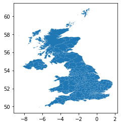

import geopandas
import topojson
import matplotlib.pyplot as pltBrexit
from IPython.display import display_markdown
display_markdown(open("README.md").read(), raw=True)Brexit
Brexit dataset
This dataset contains results for the Brexit vote at the local authority district, and administrative boundaries.
brexit_vote.csv
Source: Electoral CommissionURL
http://www.electoralcommission.org.uk/__data/assets/file/0014/212135/EU-referendum-result-data.csv
Processing: no processing was required for this dataset, see original source for additional information
Topology simplification
To obtain a much more lightweight set of geometries, we simplify the layer, respecting its topology. First we build the topology:
topology = topojson.Topology(lads)Then simplify it:
simple_uk = topology.toposimplify(.025)Inspect the resulting geography:
simple_uk.to_gdf().plot()<AxesSubplot:>
And we can write it to a GeoJSON file:
simple_uk.to_gdf().to_file('./local_authority_districts.geojson', driver="GeoJSON")Download link
- {download}
[Download the simplified LAD geometries as a GeoJSON] <local_authority_districts.geojson> - {download}
[Download the EU referendum vote results as a CSV] <brexit_vote.csv>